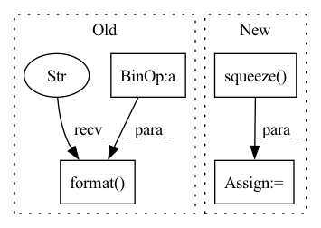

Pattern ID :32208

Before Change
res = F.upsample(res, size=gt.shape, mode="bilinear", align_corners=False)
res = res.sigmoid().data.cpu().numpy().squeeze()
res = (res - res.min()) / (res.max() - res.min() + 1e-8)
print("--> save results: {}".format(SAVE_PATH+name))
imageio.imwrite(SAVE_PATH+name, res)
After Change
res = mindspore.ops.Sigmoid()(res)
res = mindspore.nn.ResizeBilinear()(res, (h, w))
res = (res - res.min()) / (res.max() - res.min() + 1e-8)
res = res.asnumpy().squeeze()
imageio.imwrite(save_path+img_name.replace(".jpg", ".png"), res)
if __name__ == "__main__":
In pattern: SUPERPATTERN
Frequency: 3
Non-data size: 4
Instances
Fragment ID: 94210254
Project Name: gewelsji/dgnet
Commit Name: f82c53433a67c0ed8d98385254a023d800a1335c
Time: 2022-11-18
Author: gepengai.ji@gmail.com
File Name: lib_ascend/inference_om.py
M Class Name: AnonimousClass
N Class Name: AnonimousClass
M Method Name: infer(4)
N Method Name: infer(3)
M Parent Class:
N Parent Class:
M File Name: lib_ascend/inference_om.py
N File Name: lib_ascend/inference_om.py
M Start Line: 41
M End Line: 63
N Start Line: 45
N End Line: 86
'>
Before Change
fastmarch_output = GeodisTK.geodesic3d_fast_marching(
input_image, seed_image, spacing
)
fastmarch_time = time.time() - tic
tic = time.time()
geodistkraster_output = geodistk_geodesic_distance_3d(
input_image, seed_image, spacing, 1.0, 4
)
geodistkraster_time = time.time() - tic
device = "cpu"
input_image_pt = torch.from_numpy(input_image).unsqueeze_(0).unsqueeze_(0)
seed_image_pt = (
torch.from_numpy(1 - seed_image.astype(np.float32)).unsqueeze_(0).unsqueeze_(0)
)
input_image_pt = input_image_pt.to(device)
seed_image_pt = seed_image_pt.to(device)
tic = time.time()
fastraster_output_cpu = np.squeeze(
FastGeodis.generalised_geodesic3d(
input_image_pt, seed_image_pt, spacing, 1e10, 1.0, 4
)
.detach()
.cpu()
.numpy()
)
fastraster_time_cpu = time.time() - tic
device = (
"cuda" if input_image_pt.shape[1] == 1 and torch.cuda.is_available() else None
)
if device:
input_image_pt = input_image_pt.to(device)
seed_image_pt = seed_image_pt.to(device)
tic = time.time()
fastraster_output_gpu = np.squeeze(
FastGeodis.generalised_geodesic3d(
input_image_pt, seed_image_pt, spacing, 1e10, 1.0, 4
)
.detach()
.cpu()
.numpy()
)
fastraster_time_gpu = time.time() - tic
print(
"Fast Marching: {:.6f} s \nGeodisTk raster: {:.6f} s \nFastGeodis CPU raster: {:.6f} s".format(
fastmarch_time, geodistkraster_time, fastraster_time_cpu
)
)
if device:
print("FastGeodis GPU raster: {:.6f} s".format(fastraster_time_gpu))
After Change
seed_image_pt = seed_image_pt.to(device)
tic = time.time()
toivanenraster_output = np.squeeze(
FastGeodis.generalised_geodesic3d_toivanen(
input_image_pt, seed_image_pt, spacing, 1e10, 1.0, 4
)
.detach()
.cpu()
.numpy()
)
toivanenraster_time = time.time() - tic
tic = time.time()
fastraster_output_cpu = np.squeeze(
'>
Fragment ID: 94210249
Project Name: masadcv/fastgeodis
Commit Name: a1906e989649c1f0b8fdbed147c1d576ac5c41f3
Time: 2022-07-22
Author: muhammad.asad@kcl.ac.uk
File Name: samples/demo3d.py
M Class Name: AnonimousClass
N Class Name: AnonimousClass
M Method Name: demo_geodesic_distance3d(2)
N Method Name: demo_geodesic_distance3d(2)
M Parent Class:
N Parent Class:
M File Name: samples/demo3d.py
N File Name: samples/demo3d.py
M Start Line: 33
M End Line: 204
N Start Line: 17
N End Line: 181
'>
Before Change
tic = time.time()
fastmarch_output = GeodisTK.geodesic2d_fast_marching(input_image, Seed.astype(np.uint8))
fastmarch_time = time.time() - tic
tic = time.time()
geodistkraster_output = geodesic_distance_2d(
input_image, Seed.astype(np.uint8), lamb, iterations
)
geodistkraster_time = time.time() - tic
if input_image.ndim == 3:
input_image = np.moveaxis(input_image, -1, 0)
else:
input_image = np.expand_dims(input_image, 0)
device = "cpu"
input_image_pt = torch.from_numpy(input_image).unsqueeze_(0).to(device)
seed_image_pt = (
torch.from_numpy(1 - Seed.astype(np.float32))
.unsqueeze_(0)
.unsqueeze_(0)
.to(device)
)
tic = time.time()
fastraster_output_cpu = np.squeeze(
FastGeodis.generalised_geodesic2d(input_image_pt, seed_image_pt, v, lamb, iterations).cpu().numpy()
)
fastraster_time_cpu = time.time() - tic
device = "cuda" if torch.cuda.is_available() else None
if device:
input_image_pt = input_image_pt.to(device)
seed_image_pt = seed_image_pt.to(device)
tic = time.time()
fastraster_output_gpu = np.squeeze(
FastGeodis.generalised_geodesic2d(input_image_pt, seed_image_pt, v, lamb, iterations).cpu().numpy()
)
fastraster_time_gpu = time.time() - tic
print("Runtimes:")
print(
"Fast Marching: {:.6f} s \nGeodisTk raster: {:.6f} s \nFastGeodis CPU raster: {:.6f} s".format(
fastmarch_time, geodistkraster_time, fastraster_time_cpu
)
)
if device:
print("FastGeodis GPU raster: {:.6f} s".format(fastraster_time_gpu))
After Change
)
tic = time.time()
toivanenraster_output = np.squeeze(
FastGeodis.generalised_geodesic2d_toivanen(input_image_pt, seed_image_pt, v, lamb, iterations).cpu().numpy()
)
toivanenraster_time = time.time() - tic
tic = time.time()
fastraster_output_cpu = np.squeeze(
'>
Fragment ID: 94210261
Project Name: masadcv/fastgeodis
Commit Name: a1906e989649c1f0b8fdbed147c1d576ac5c41f3
Time: 2022-07-22
Author: muhammad.asad@kcl.ac.uk
File Name: samples/demo2d.py
M Class Name: AnonimousClass
N Class Name: AnonimousClass
M Method Name: evaluate_geodesic_distance2d(2)
N Method Name: evaluate_geodesic_distance2d(2)
M Parent Class:
N Parent Class:
M File Name: samples/demo2d.py
N File Name: samples/demo2d.py
M Start Line: 29
M End Line: 158
N Start Line: 18
N End Line: 100